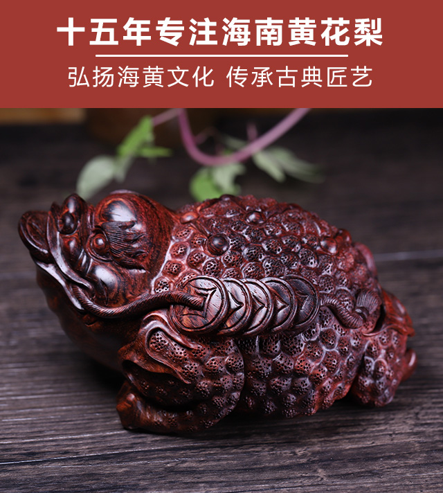
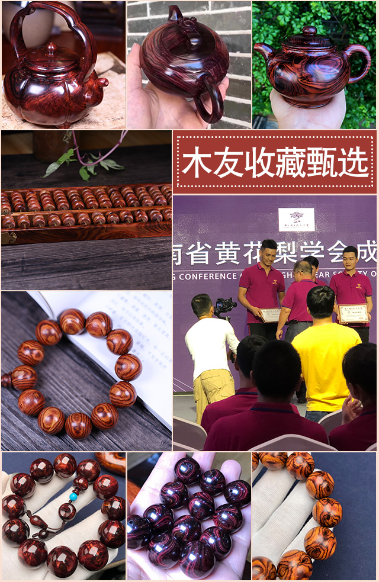
大家好！我是关万孟！我接触海南黄花梨已经15年，很早就到家具工厂做学徒，到自主创业后拥有专门定制海南黄花梨家具的工厂和展厅。足迹遍布了海南各个原料产区！十五年来一直专注于海南黄花梨工艺品的生产，批发！
随着海黄文化的升温，当然重要的是大家都不是当年的穷学生了，身边越来越多的人都开始把玩海黄…… 每天要回答N多回答过无数次的关于海黄的咨询，鉴别，询价，有时候还要帮忙定制加工成特定的款式。让我萌生了写一系列关于海南黄花梨文章的想法
关注关万孟 了解更多海黄咨询
yssshty
长按可复制
关万孟
海黄界有很多经验丰富技艺高超的老师傅，但是闯出自己名号的却寥寥无几。当时间的累积到了一定的层次的时候，高下之分就只和天生的行业悟性有关了！
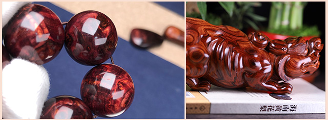
“他看过的料基本就没有漏了”业内各个场口的老板提起关万孟总会竖起大拇指，露出敬佩的神情。跟同行比起来，关万孟显得格外“大胆”，他看木头有时候不需要看实物光相片就可以做出精准判断出哪里有洞有裂！可以掌握木头里面的纹理走向跟变化，在没有开窗的情况下可以判断里面的纹理！
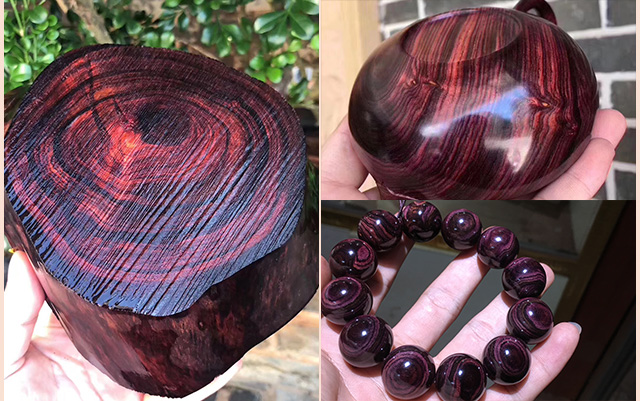
走向！对自己自信！战绩辉煌！往往都会让材料本身的价值得到完美的利用，也因此成为了海黄界标志性的人物！
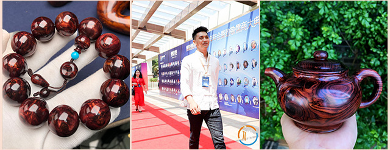
诚实守信 讲究品质
我一心一意主做保真精品海黄老料油梨，15年来品质如一，诚信坚守，只做正宗海南黄花梨，杜绝假货！
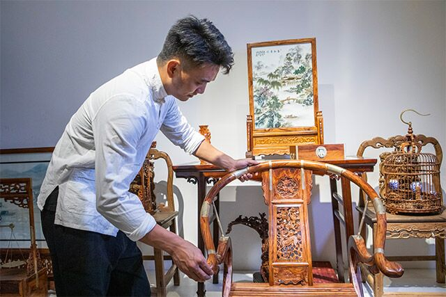
由于海南岛东西两部生长环境不同，故此产生了东部糠梨，西部油梨的两级划分，而紫油梨又被誉为油梨中的贵族。
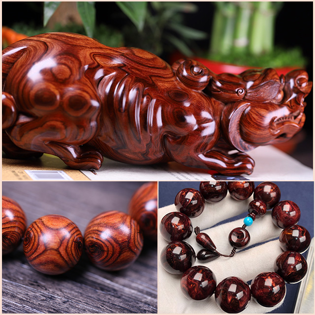
关注关万孟 了解更多海黄咨询
yssshty
长按可复制
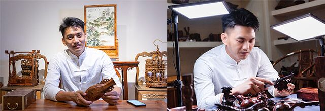
海南黄花梨手串盘玩
一般令人满意的有5个要素
材质、花纹、香味（老料）、同料、工艺（无胶、无染色、无补）满足以上五点的海黄精品手串很难遇到，经常出产这些精品手串的关万孟才显得格外厉害！
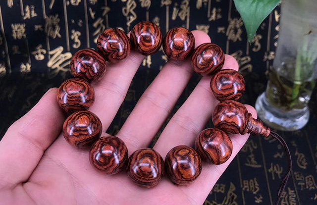
海南五指山一手正宗海黄老料
选料—制作—到手（整个过程无中间商）
教你把玩值得珍惜的海黄把玩件
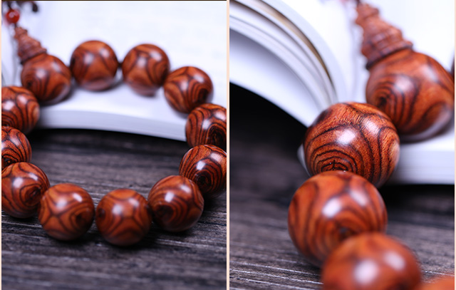
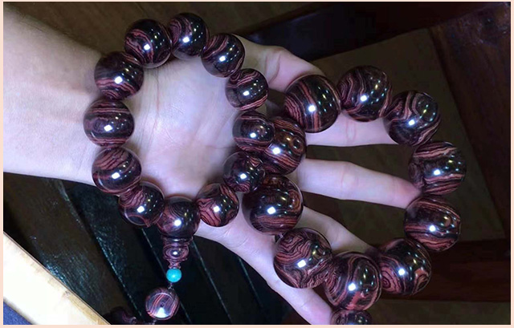
15年的积累
自建海南黄花梨仓库
从原料到成品一体化
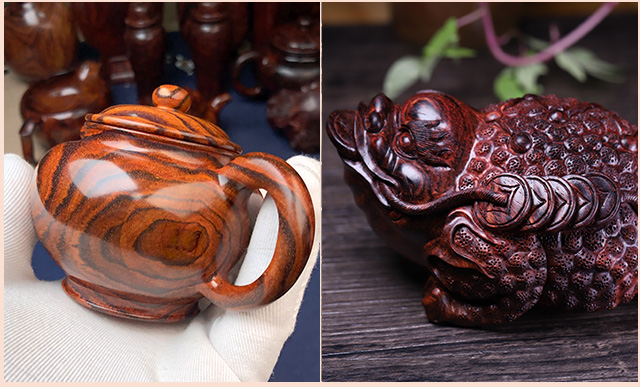
专注选材，匠心工艺
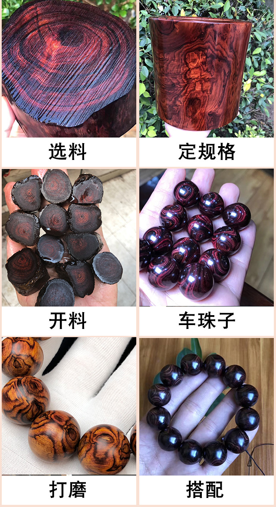
我们的成品原料都是囤积的野生老木料，价格实惠品质高。
【定规格】确定珠子大小开始上锯，按珠子制定规格开出。
【开料】各种【对眼】、【x纹】开料都非常工整分毫不差。
【车珠子】准备水床，将珠子车圆，这一步由有经验的师傅掌控，把握纹理和尺寸。
【打磨】珠子车圆后就是打磨抛光，从600目砂纸到800目砂纸再到2000目，考验的更是师傅的耐心和娴熟的技巧。
【搭配】配以同料配饰相搭，一串高品质海黄手串诞生。
关注关万孟 了解更多海黄咨询
yssshty
长按可复制
答疑解惑，分享海黄知识
海黄的真假，永久的话题！
在网上看有人说闻味道区分海黄和越黄，讲海黄是甜香味，越黄是辛辣味，我觉得这根本不靠谱！因为等投身到实践中，大家会发现迷茫了。即便是专家天天闻，让他闭眼来区分，也区分不出来。
我们经常玩海黄的人，一般先闻味道来确认是黄花梨，再看纹路、色泽来确认是海黄还是越黄。所以在这里我建议大家一定要接触到海黄实物，闻闻味道，记住个味道，尤其是打磨的时候，味道更为明显！
当然，有些海黄成品由于抛光，氧化等原因，味道是不明显的，所以纹理也就成了很重要的指标。
海黄VS越黄
一：越黄的颜色跟海黄淡，多呈黄色，颜色没有海黄深，而海黄的颜色有黄色，咖啡色，褐黄色，还有些质量好的，带偏蓝或紫色。
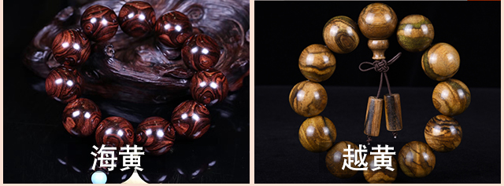
二：海黄的线条流畅，清晰，而越黄的线条不够明显，稍感模糊。
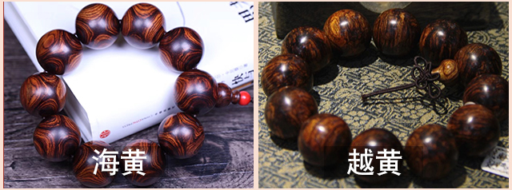
三：香味，海黄是有降香味的，香气偏辣，带辛辣味，而越黄则是有股酸味。
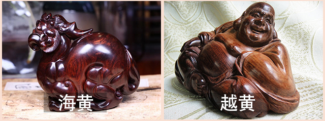
海黄VS紫檀柳
一：海黄基本上不能沉水，而紫檀柳都能沉水，能沉水的海黄也没有紫檀柳的密度大。
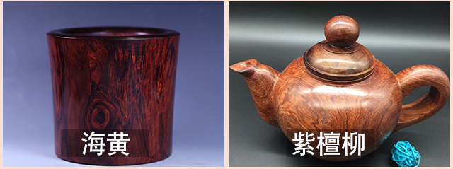
二：香味。海黄是有香味的，而紫檀柳没有任何香味。